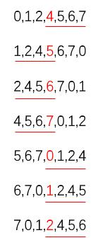
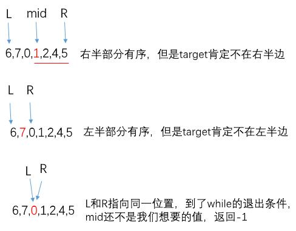

Leetcode 33- 搜索旋转排序数组
1. 题目描述
假设按照升序排序的数组在预先未知的某个点上进行了旋转。
( 例如，数组 [0,1,2,4,5,6,7] 可能变为 [4,5,6,7,0,1,2] )。
搜索一个给定的目标值，如果数组中存在这个目标值，则返回它的索引，否则返回 -1 。
你可以假设数组中不存在重复的元素。
你的算法时间复杂度必须是 O(log n) 级别。
1 | 示例 1: |
2. 思路
既然要求是O(log n)级别，所以肯定想到二分查找，先还没什么思路，把题目提供的case列举一下：

因为我们不知道具体在哪个地方旋转的，所以也就不知道在哪个地方开始有一个升序列，但是，我们又知道肯定有这样一个升序列，图中的红色数组是mid位置，下划线是升序列，不难发现有下面的规律：
- 如果
nums[mid]<nums[right],那么nums[mid]~nums[right]都是升序列,即右半段有序 - 如果
nums[mid]>nums[right],那么nums[left]~nums[mid]都是升序列，即左半段有序
这里是不会出现nums[mid]=nums[left]的情况哈，因为题目已经假设了。
现在假设我们旋转后的序列是6,7,0,1,2,4,5，
1.我们要找3
现在我们的left=6，mid=1，right=5（这里值得都是下标对应的值），因为3在1到5之间，并且1到5又是有序的，所以在右半边二分查找就完事了。
2.我们要找7
和找3的时候类似，但是我们显然知道7不在1到5的范围内，所以要在左半部分查找，于是将right指针指向mid的前一位，再重复我们的查找策略。
3.我们要找8
用个图模拟一下寻找的过程如下：

3. 代码
Java实现。1
2
3
4
5
6
7
8
9
10
11
12
13
14
15
16
17
18
19
20
21
22
23
24
25
26
27
28
29
30
31
32
33
34
35
36
37
38
39
40
41
42
43
44
45
46/**
* @ClassName SearchRotatedSortedArray33
* @Deacription // TODO
* @Author LiuZhian
* @Date 2019-10-28 11:31
* @Version 1.0
**/
public class SearchRotatedSortedArray33 {
public int search(int[] nums, int target) {
int right = nums.length - 1;
int left = 0;
while (left <= right) {
int mid = (left + right) / 2;
if (target == nums[mid])
return mid;
// 因为我们不知道在哪里旋转的，会出现下面两种情况：
// 1. mid~lenght-1是有序的，即右边有序
// 2. 0~mid是有序的，即左边有序
if (nums[mid] < nums[right]) // 1. 右边有序
{
// 如果target的确落在右半部分，则在右边二分查找
if (target > nums[mid] && target <= nums[right]) {
left = mid + 1;
}
// 也有可能target在左半部分
else {
right = mid - 1;
}
}
else // 2. 左边有序
{
// 如果target的确落在左半部分，则在左边二分查找
if (target >= nums[left] && target < nums[mid]) {
right = mid - 1;
}
// 也有可能target在右半部分
else {
left = mid + 1;
}
}
}
return -1;
}
}
4.类似的题
- leetcode 81 - 搜索旋转排序数组②
这个题和本题唯一的区别就是元素有重复，请考虑[2,5,6,0,0,1,2]和[1,1,3,1]和[1,1,1,3,1,1]这几种情况。
因为有重复元素，导致之前33题的判断哪一段是有序的可能有误，例如：[1,1,1,3] 旋转后得到 [1,1,3,1],此时mid=1，left=1，right=1。
根据if(nums[mid] <= nums[right])判断，我们会得到右半段有序，然后又根据if (target > nums[mid] && target <= nums[right])判断，
得知：target不在右半段，其实是在的，所以可能错过元素。
所以在nums[mid]==nums[left]==nums[right]时需要将left++，right--。
代码如下：1
2
3
4
5
6
7
8
9
10
11
12
13
14
15
16
17
18
19
20
21
22
23
24
25
26
27
28
29
30
31
32
33
34
35
36
37
38
39
40
41
42
43
44
45
46
47
48
49
50
51class Solution {
public boolean search(int[] nums, int target) {
int right = nums.length - 1;
int left = 0;
while (left <= right) {
int mid = (left + right) / 2;
if (target == nums[mid])
return true;
// 因为有重复元素，导致之前33题的判断哪一段是有序的可能有误，例如：
// [1,1,1,3] 旋转后得到 [1,1,3,1],此时mid=1，left=1，right=1
// 根据if(nums[mid] <= nums[right])判断，我们会得到右半段有序
// 然后又根据if (target > nums[mid] && target <= nums[right])判断，
// 得知：target不在右半段，其实是在的，所以可能错过元素。
// 此时把left++，right--
if(nums[mid]==nums[left] && nums[mid]==nums[right])
{
left++;
right--;
}
// 因为我们不知道在哪里旋转的，会出现下面两种情况：
// 1. mid~lenght-1是有序的，即右边有序
// 2. 0~mid是有序的，即左边有序
else if (nums[mid] <= nums[right]) // 1. 右边有序
{
// 如果target的确落在右半部分，则在右边二分查找
if (target > nums[mid] && target <= nums[right]) {
left = mid + 1;
}
// 也有可能target在左半部分
else {
right = mid - 1;
}
}
else // 2. 左边有序
{
// 如果target的确落在左半部分，则在左边二分查找
if (target >= nums[left] && target < nums[mid]) {
right = mid - 1;
}
// 也有可能target在右半部分
else {
left = mid + 1;
}
}
}
return false;
}
}
leetcode 35 - 简单的二分查找
leetcode34 - 带有重复元素的二分查找
这个题的意思是，给定一个按照升序排列的整数数组 nums，和一个目标值 target。找出给定目标值在数组中的开始位置和结束位置。算法时间复杂度也必须是 O(log n) 级别。
其实这个也很好做到，只要一旦找到了mid和target相等的时候，从mid分别向前向后增长窗口即可，一直试探到下一个不相等的元素位置。
1 | class Solution { |